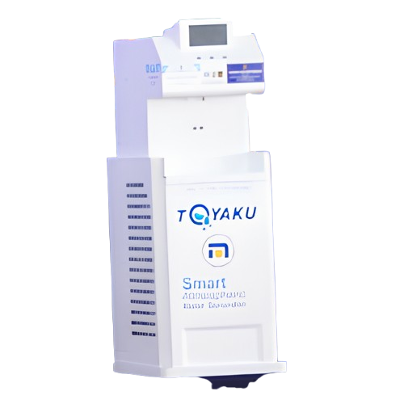

Robot Unggulan Kami
ROCA-KU
Robot pecatur pertama di Indonesia dengan akurasi gerakan setara Grand Master.
Cara Pemakaian →
BECI-KU
Robot asisten pintar yang dirancang untuk membantu pelayanan informasi kampus.
Cara Pemakaian →
